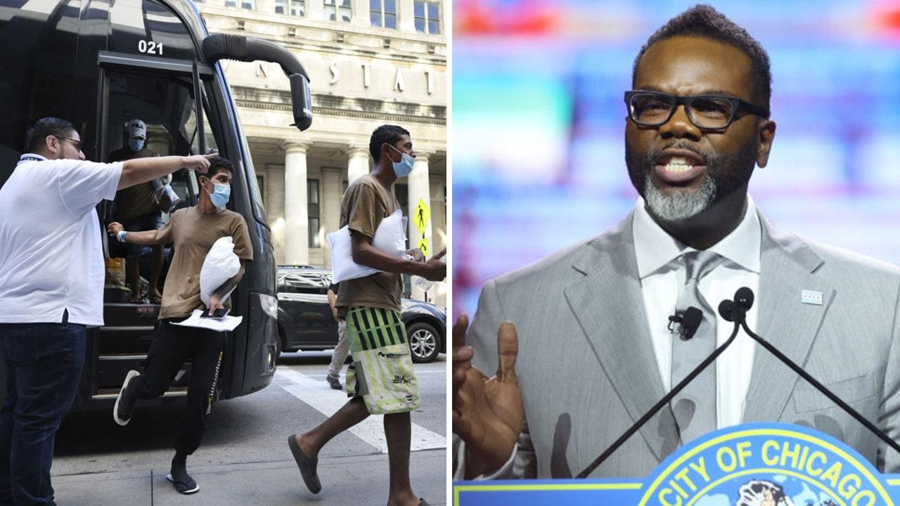

Chicago City Council approves $70M for migrant care despite voter backlashThe Chicago City Council on Friday green-lit an extra $70 million for the care of illegal immigrants in the Windy City despite a massive backlash from residents that foreign nationals are being prioritized over native Chicagoans. The council voted 30-18 to approve the request made by Mayor Brandon Johnson in order to help deal with the ongoing migrant crisis it is facing. CBS News reported that the vote, which came after an hour of heated debate, accompanied an approval of $48 million in grant money from state and federal governments. That money is on top of a $150 million assigned to migrant care in the budget already. Johnson, along with a number of other mayors, have appealed to the federal government for billions more in funding than it is already providing. "Yes, this is a challenge. Do we want to spend this money like this right now? Of course not, but again, we have an obligation, and we have a responsibility to move this ball forward," said Jason Erwin, the council’s budget committee chair, according to CBS. Johnson’s office had said the funding request was to ensure the city is prepared "should there be any sudden increases in new arrivals sent by Texas Gov. Greg Abbott." The city aims to provide "basic necessities" including food, shelter, medical care, education, vaccines, case management and resettlement support. According to Johnson’s office, the city has at its peak been dealing with more than 2,000 migrants coming in a week. Nearly 40,000 have arrived since August 2022. The mayor has also been calling for more funding, national coordination of resettlement and faster employment documents. However, residents showed up in force at a City Council meeting on Wednesday to protest the request for more funding ahead of the vote, with furious residents accusing the government of prioritizing funds to migrants that should be going to residents. "We need that money in my neighborhood, we need that money on my block," railed one Black woman wearing a red "Make America Great Again" cowboy hat. "So I’m asking y'all to use our tax money for our people, we need it." "Vote for the money for these immigrants today and we coming for those seats, you can believe that," she said. "You better be worrying about your job, you better be worrying about your longevity because we gonna vote and we gonna getcha out, 'cause you ain’t doing right by us, that’s what time it is." "They're showing up here in New York and Chicago attacking people in the streets," another resident said on Wednesday. "The police are fighting with them in the… shelters that you guys are funding." Meanwhile, some residents have been pushing to recall Johnson. A group is currently laying the groundwork by gathering signatures for a ballot referendum to change state law, which currently does not allow for the recall of anyone except the governor. Fox News' Garrett Tenney and Michael Dorgan contributed to this report. |
 |